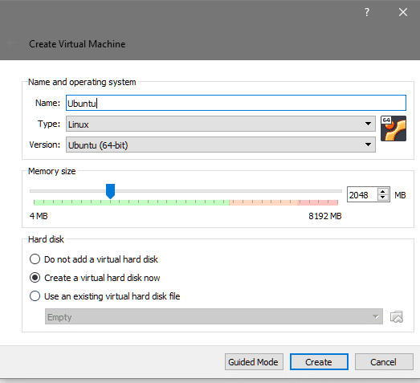
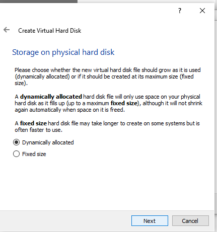
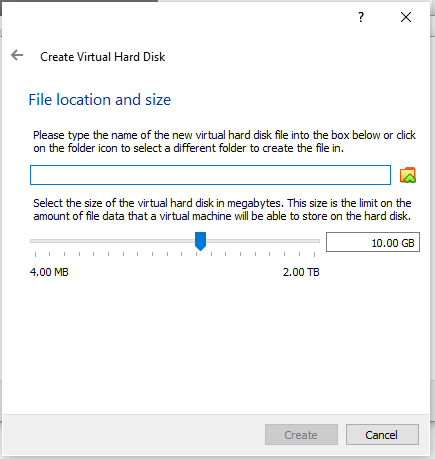
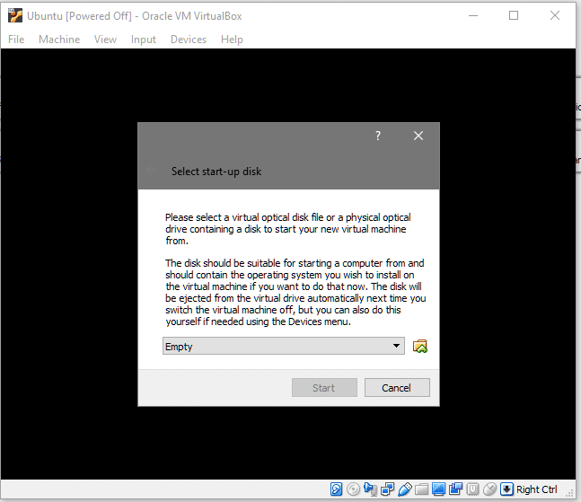
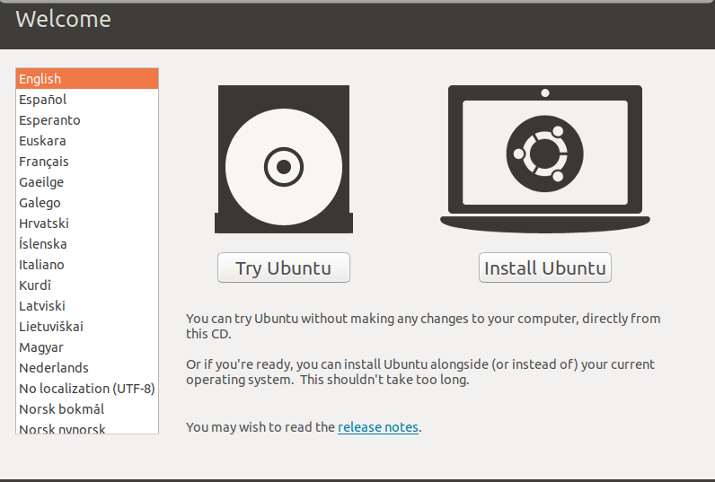
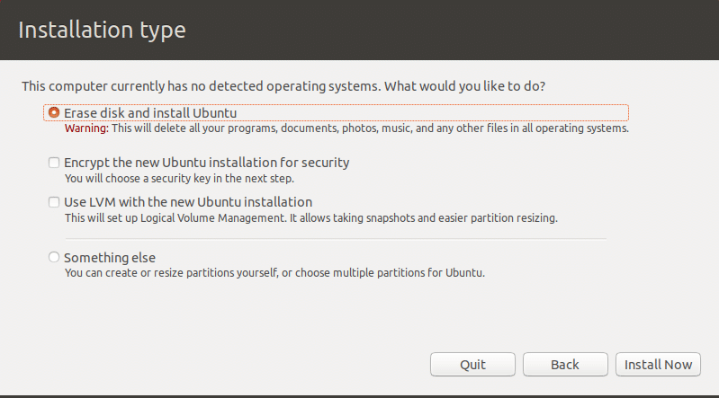
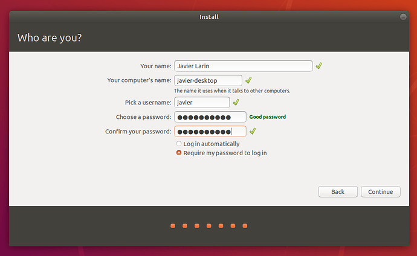

This insures the detail founding of something and everything.
Here, we are going to see how we can use ubuntu on a virtual machine.
First open your virtual box and then create a new virtual machine
Enter the name Ubuntu and type Linux will be automatically selected and version Ubuntu 64 bit or use the drop downs to select the same feature. We will be selecting 2 gb memory for this virtual machine and then click on create a virtual hard disk and click create button. Select "dynamically allocated" on storage on physical disk 
Finally, you need to create a virtual disk. Select the “Create a virtual hard disk now” option and click on Create to continue. We will be setting the disk type to VDI and the size to be 10GB.
Now, your VM is ready to go.
Now, select the newly created VM and click start. The VM console window will pop up along with an additional window asking you to specific what start-up disk you wish to use (Since the virtual hard disk is not yet bootable).
Click on the folder icon and from your file explorer, select the ubuntu iso file that you have downloaded earlier. Once that is done, you can start the system.
Click on the install ubuntu option, after making sure your language is selected.
Minimal install gives you a web browser and a handful of other utilities and that's it. It would be enough to carry out your lab tasks while familiarizing with the linux system.
Now, comes the most difficult part that is the file system which is different from windows operating system. But, since we are using VM we have one quite disposable Virtual Disk to experiment with, we can simply select “Erase Disk and Install Ubuntu” option, as shown below:
It will give you a warning sign, saying that permanent changes will be made on the hard disk, click Continue to continue.
Enter your desired username, computer’s name and password  And now we simply wait, as Ubuntu configures rest of the things for us. Once the installation finishes it will prompt you to restart the system.
This site provides the knowledge of embedding linux systems in windows systems using virtual box.
| Related Articles |
|---|
| Virtual Machine |
| Ubuntu |
| Linux History |
| Windows Operating System |
| Microprocessors |
| Embedded System |